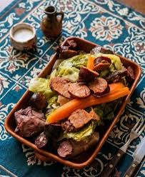
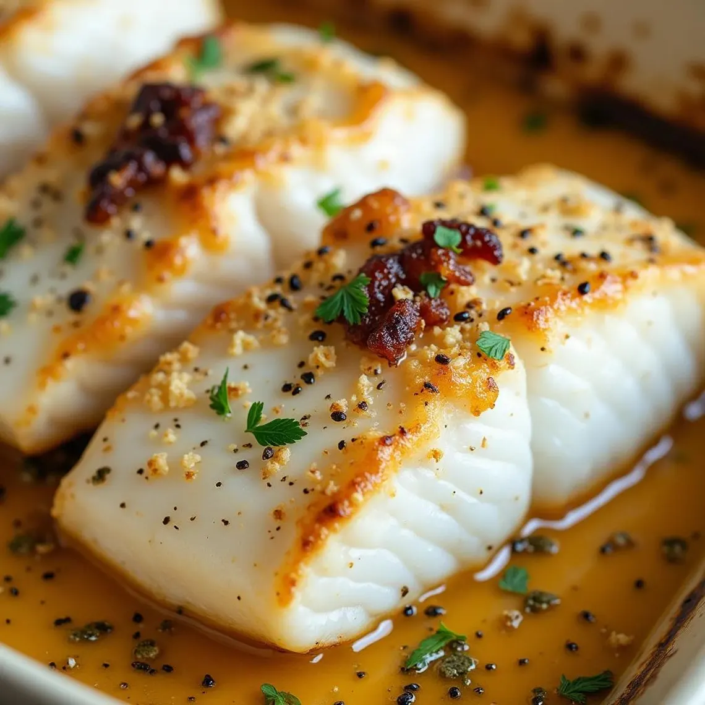
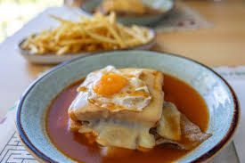
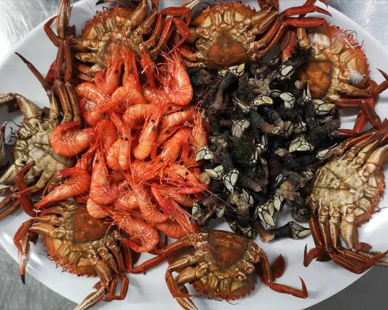
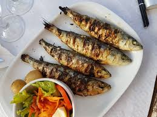
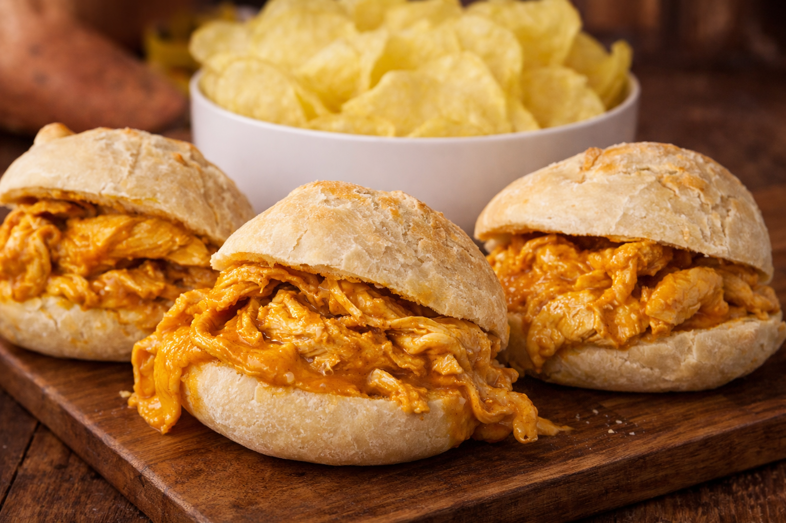
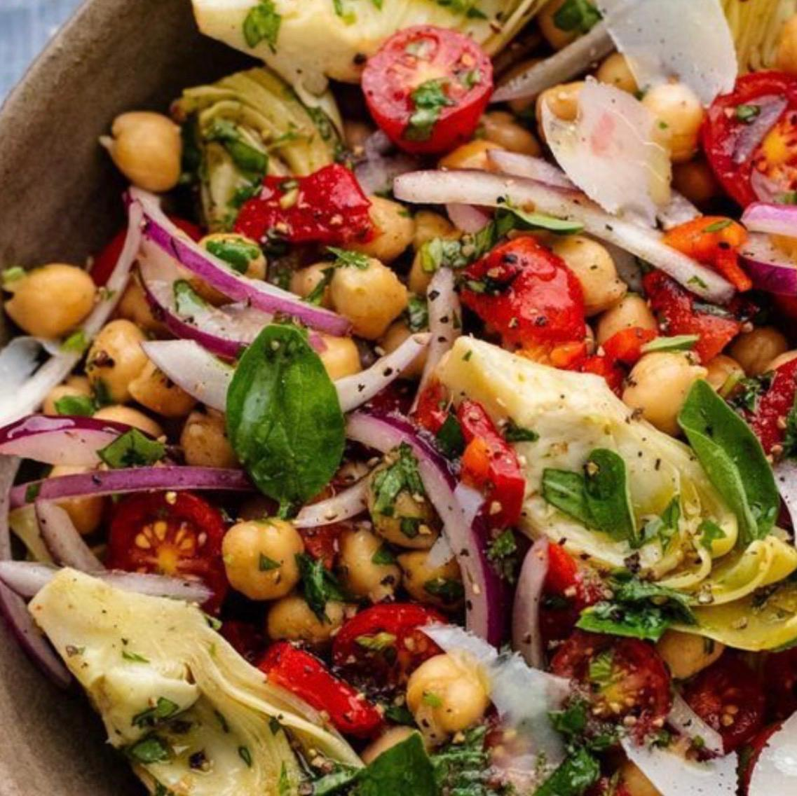
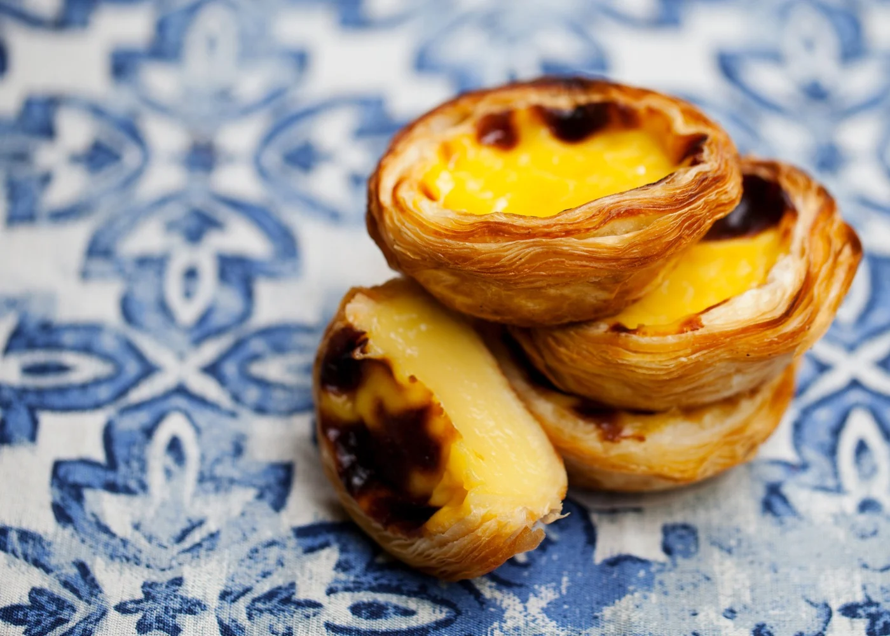
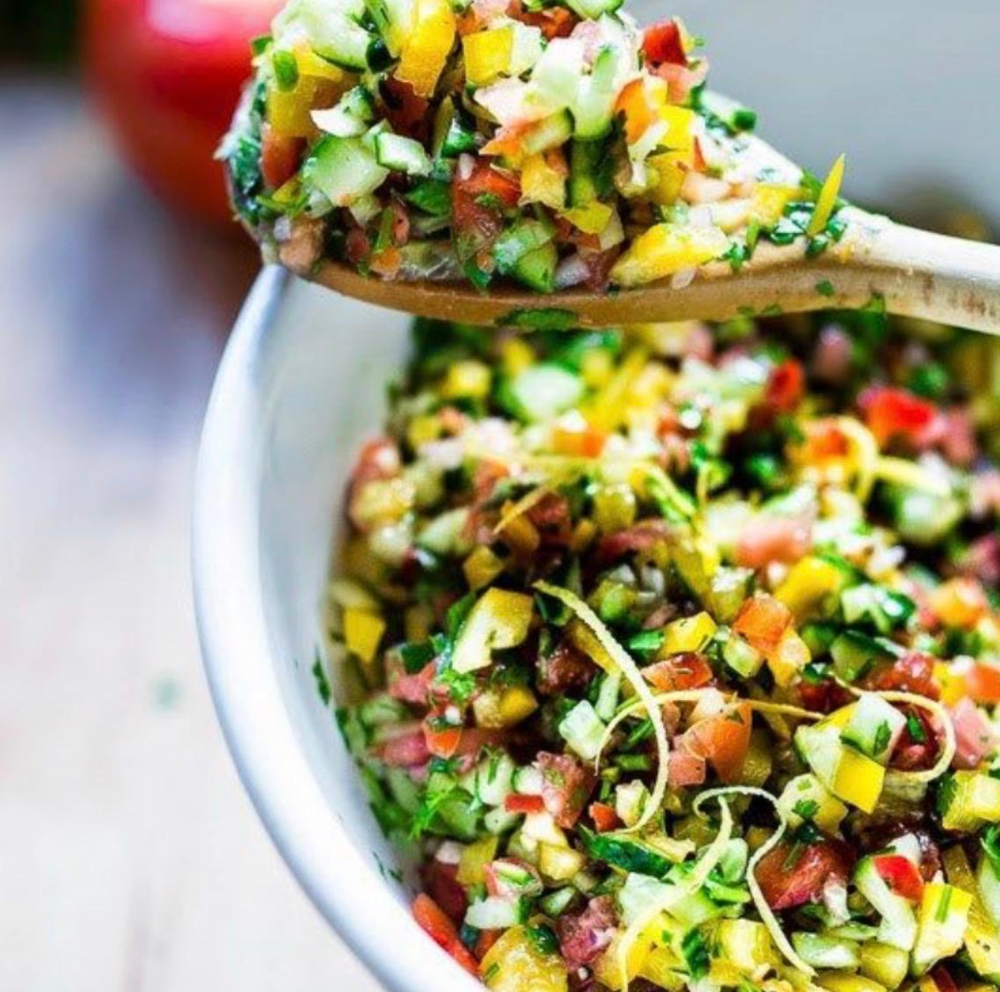

⭐⭐⭐⭐⭐
"¿Hiciste un tour conmigo? Tu opinión me ayuda a llegar a más viajeros — es el mayor regalo que puedes hacerme."
Dejar reseña en Tripadvisor
Cocina tradicional
portuguesa
Las tascas y adegas donde los portuenses comen de verdad. Sin
trampa, sin cartón.
Adega Viseu no Porto
Porto centro
O Rápido
Porto
Senhor Zé
Poveiros
Postigo do Carvão
Ribeira
Taberna dos Mercadores
Ribeira
Abadia do Porto
Aliados
Douro Sentido
Poveiros
Casa Dias
Vila Nova de Gaia
María Rita
Poveiros
Nova'Adega
Porto
Casa Viúva
Porto
Café Almada
Porto centro
Tip de Fer: En estos sitios pide siempre el "prato
do dia" — es más barato, más fresco y lo que los locales comen.
Reserva con antelación en Taberna dos Mercadores.

Bacalao · Bacalhau
Portugal tiene más de 365 recetas de bacalao — una para cada día
del año. Aquí los mejores donde probarlo.
O Bacalhoeiro
Cais Gaia
Abadia do Porto
Aliados
También en tradicional
Adega São Nicolau
Ribeira
Douro Sentido
Poveiros
Adega Viseu no Porto
Porto centro
Taverna d'Avó
Porto
Maria Rita
Poveiros
Culto ao Bacalhau
Porto
Especialista
Tip de Fer: Pide el bacalhau à Brás si es
tu primera vez — es el más suave y fácil de entender. Para
aventureros: bacalhau com natas en Adega São Nicolau.

Francesinha ·
el plato de Porto
El sándwich más famoso y contundente de Portugal. Con salsa
secreta, huevo y cerveza. Cada sitio tiene su receta.
Brasão
Aliados & Poveiros
Clásico
Restaurante Capa Negra I
Porto
Bira dos Namorados
Túnel de Ceuta
Café Santiago
Poveiros
Muy popular
Lado B
Poveiros
Santa Francesinha
Poveiros
A Regaleira
Porto
Tip de Fer: La francesinha es un plato contundente
— no pidas otra cosa. Pide media si tienes poca hambre.
Lado B tiene versión vegetariana. Evita los sitios
en la Ribeira — son para turistas.

Mariscos · del Atlántico
Porto está a 20 minutos del mar. Los mariscos son fresquísimos y
los precios, mucho más razonables que en cualquier capital.
Mariscaria do Bom Sucesso
Porto
Top pick
Mercado do Bolhão
Porto centro
Marisqueira Os Lusíadas
Matosinhos
Casa Moreira
Afurada · Vila Nova de Gaia
Postigo do Carvão
Praça da Ribeira
Marisqueira O Fernando
Matosinhos
Marisqueira Couto
Matosinhos
Restaurante Lage Sr. do Padrão
Matosinhos
Casa Rocha
Foz do Douro
Tip de Fer: Para mariscos de calidad ve a
Matosinhos — es el barrio pesquero de Porto, a 15
min en metro. Los precios son mejores y la frescura, incomparable.
Pide percebes si los hay.

Sardinas · assadas
Las sardinas a la brasa son el sabor del verano portugués. De
junio a septiembre, el olor llena las calles.
Tasquinha dos Guindais
Porto
Favorita de Fer
A Grade
Porto
Casa Serrão
Matosinhos
Casa do Pescador
Afurada
Tip de Fer: Las sardinas son
temporada de junio a septiembre. Fuera de esa
época, mejor pedir otro pescado. Pide siempre con pimiento asado y
pan de maíz.

Sándwiches ·
bifanas & pregos
El street food portugués por excelencia. La bifana (cerdo) y el
prego (ternera) son el almuerzo rápido de cualquier portuense.
Conga — Casa das Bifanas
Porto centro
Icónico
Lado B
Poveiros
Café Santiago
Poveiros
Restaurante Capa Negra I
Porto
Café Brasão Aliados
Aliados
Café Nelma
Porto
Tip de Fer: Conga es el sitio más
famoso de Porto para bifanas. Hay siempre cola — merece la pena
esperar. Cuesta menos de 3€ y es uno de los mejores bocados de la
ciudad.

Vegetarianos · & veganos
Porto ha evolucionado mucho. Hoy tiene opciones vegetarianas y
veganas muy buenas — sin necesidad de sacrificar el sabor.
Honest Greens
Porto
Muy recomendado
Vegana by Tentugal
Porto
Nola Kitchen
Porto
Noshi Coffee
Porto
Da Terra
Porto
Manna Porto
Porto
Especie
Porto
Kind Kitchen
Porto
Lado B
Poveiros
Francesinha veggie

Pasteles de Nata ·
imprescindibles
El pastel de nata es religión en Portugal. Caliente, con azúcar y
canela por encima. No te vayas de Porto sin comer uno.
Manteigaria
Porto
Favorita de Fer
Fábrica da Nata
Porto
Confeitaria do Bolhão
Porto centro
Histórica
Casa das Tortas
Porto
Pastelaria Tupi
Porto
Tip de Fer: Pídelo siempre
acabado de salir del horno — en Manteigaria los
hornean continuamente. Con café expresso corto es la combinación
perfecta. Cuesta entre 1,20€ y 1,80€.

Gluten Free ·
sin preocupaciones
Para quienes tienen intolerancia al gluten — Porto tiene cada vez
más opciones seguras y deliciosas.
Noshi Coffee
Porto
Com Cuore
Porto
Glutenfreak
Porto
Especialista GF
Sergio Crivelli
Porto
Tasquinha do Bé
Porto
Francesinha GF
O Paparico
Porto
Urbana
Porto
Bonna Pastelaria Gluten Free
Porto
100% GF
Cantinho do Avillez
Porto
Tasquinha do Caco
Porto
Tip de Fer: Avisa siempre en el restaurante — en
Portugal suelen tomar en serio las intolerancias.
Glutenfreak es 100% libre de gluten.
Tasquinha do Bé tiene la única francesinha sin
gluten de Porto.
¿Quieres conocer estos sitios
en persona?
en persona?
En mis tours paso por algunos de estos lugares y te cuento las historias que no están en ninguna guía. O escríbeme y organizamos una ruta gastronómica personalizada.